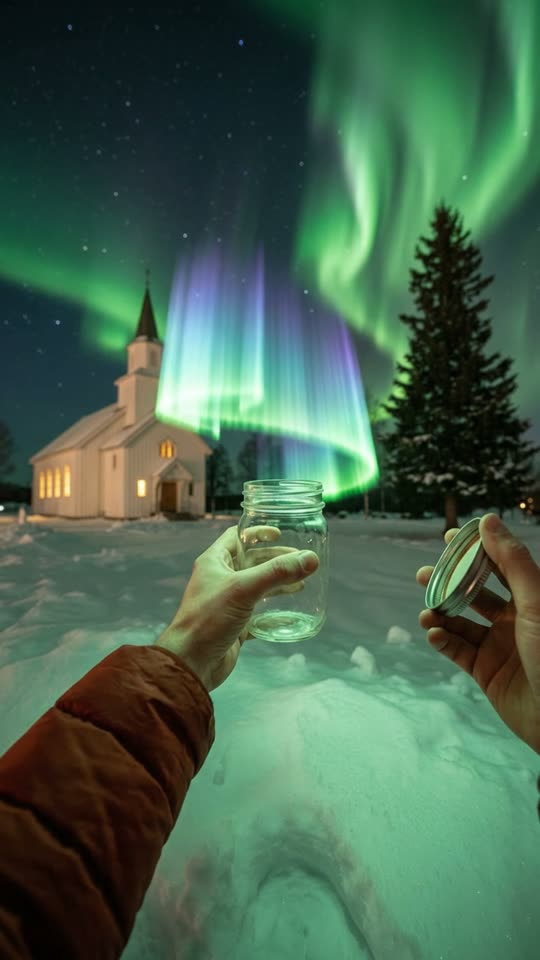
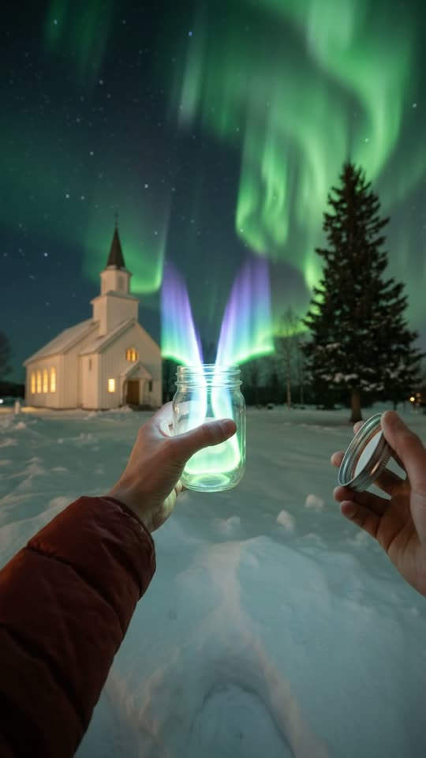
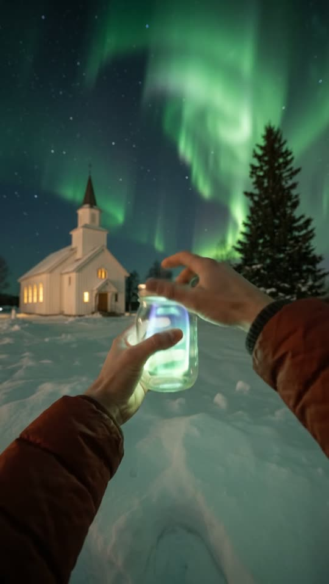
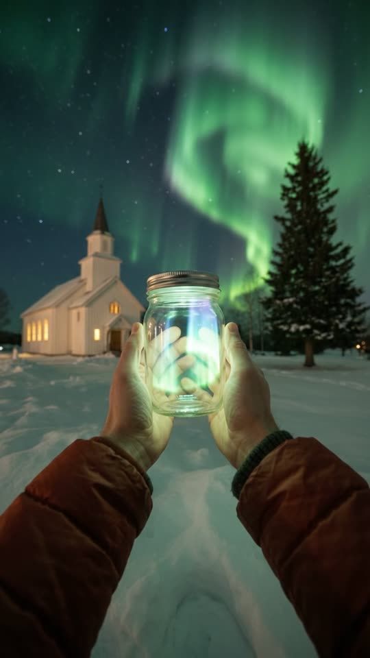

Free prompt pack
One jar.One piece of sky.
Nobody caught the northern lights in a jar. One still image and one prompt that describes the shot second by second.
Both prompts, in the order I ran them. Twist the lids. Tap the sky.
The first frame
The light is already over the jar. This image is frame one: the church, the sky, the open jar in one hand, the lid in the other, and a piece of the aurora hanging right above the jar's mouth.
Watch out
Describe the light by how it looks: fine rays, see-through, green at the bottom and violet at the top. Call it a glow and you get a flame.

The prompt 149 words
First-person photo at eye height, standing on fresh snow at night under bright green northern lights in a starry sky. Forty metres ahead at frame-left, a small white wooden church with a pointed steeple and four warm yellow lit windows; a tall dark spruce frame-right of it. In the centre, a bare left hand coming from the sleeve of a rust-red puffy winter jacket holds up an open, smooth clear-glass mason jar. Floating just above its mouth, lighting its rim green, is a small piece of the aurora twice as wide as the jar: a soft translucent ribbon of glowing light made of fine vertical rays, bright green along its lower edge, fading up into cyan, blue and violet at its rippled top, the church faintly visible through it. At frame-right, a bare right hand holds a silver screw-on lid. Real night photo, natural colour, a little digital noise.
The take
Ten seconds, written second by second. Add the image from step 01 as the reference, set 10 s, 9:16, 720p and audio on, and paste the prompt whole.
- 0–1.2 sthe jar rises the last ten centimetres
- 1.2–3.8 sthe light sinks in through the mouth
- 3.8–4.8 sthe lid comes across
- 4.8–6.4 stwo twists, shut
- 6.4–7.4 sboth hands bring it close
- 7.4–10 sthe aurora swirls inside
Watch out
Keep the jar in the same hand the whole take. If it changes hands, the model makes a second jar.
Fragments



The prompt 1557 words
FORMAT Real first-person video at eye height, as if seen through the eyes of a person standing in the snow, seen as the finished exported video file: the full picture edge to edge, nothing on top of it. Whatever records the picture is never in frame: only the two forearms and hands. One continuous take in real time, no cuts. Vertical frame. The video runs at 24 fps. No frame is repeated. Real time, 1x speed, never slow motion. SCENE On a snowy field at night under the northern lights, a small piece of the aurora floats at chest height just above an open glass jar that the person filming holds up in their left hand. They lift the jar the last few centimetres under it, and the light sinks down through the jar's mouth until all of it is inside. The right hand puts the silver lid on and screws it shut, and both hands bring the glowing jar up close to the eyes, the aurora rippling inside the glass. The light is already floating just above the jar's mouth in the first frame. The take ends with the closed jar held close and glowing, the church and the aurora in the sky behind it. EXACTLY ONE JAR, ONE LID, ONE PIECE OF AURORA, TWO HANDS. REFERENCE IMAGE Use it for the snowy field, the church, the spruce, the sky and its aurora, the jar, the lid, the hands and sleeves, the floating light and the night exposure. Everything matches it exactly, zero drift, no smoothing. The action is described below. THE PIECE OF AURORA A small piece of the northern lights, twice as wide as the jar: a soft, translucent ribbon of glowing light made of fine vertical rays, bright green along its lower edge, blending upward into cyan, blue and violet, with a rippled, feathered top edge. It looks exactly like the aurora in the sky, only small and close: the snow and the church show faintly through it, it has no solid surface and no hard core, and it waves slowly like a curtain in a light wind. It glows softly and casts a faint green and violet light on the glass, the fingers and the snow. It is never fire, never a flame, never smoke, never liquid, never a hologram, never a solid object, and it never gives off sparks. THE JAR AND THE HANDS One plain clear-glass mason jar, about fifteen centimetres tall, with a threaded neck, no label and no lettering, held in the bare left hand from the first frame to the last. One silver metal screw-on lid with a cream inner lining, held in the bare right hand. Both hands are bare, slightly reddened by the cold, and come out of the sleeves of a rust-red puffy winter jacket with dark knitted cuffs. Only these two hands appear, both belonging to the person filming. LOCATION MAP The person stands still on fresh snow, facing a small white wooden church about forty metres ahead at frame-left, with a pointed steeple and four warm yellow lit windows along its side. A tall dark spruce stands frame-right of the church, smaller spruces further right, low snowy hills on the horizon behind. Overhead, tall green aurora curtains with violet tops sweep across a starry navy sky. The floating light is sixty centimetres in front of the eyes at chest height, directly above the jar. The person never walks: only the arms move. FIRST FRAME Already moving: the church at x 5-40%, its roofline at y 40%, the snow horizon at y 47%; the aurora curtains filling the sky above y 35%; the open jar in the left hand at x 38-60%, y 48-66%, the left forearm coming in from the bottom-left corner; the piece of aurora floating at x 36-64%, y 36-47%, its green lower edge a few centimetres above the jar's rim; the silver lid in the right hand at x 74-94%, y 50-62%. Instant read: someone is about to catch the northern lights in a jar. No delayed reveal. OPTICS Natural first-person field of view, deep focus from the jar to the church, the sky sharp with stars. Night exposure, bright for the hour: the snow reads pale blue-grey, the sky deep navy, digital noise in the shadows. CAMERA At eye height, the person standing still: the frame breathes and sways slightly with the body, never more than a few degrees. It never walks forward, never pans away from the church, never tilts up to the sky, never zooms, never cuts. The church stays at frame-left and the jar in the middle of the frame from the first second to the last; only from 6.4 s does the jar come closer to the eyes. ACTION TIMING 0–1.2 s — The left hand lifts the open jar slowly the last ten centimetres up under the floating light; the light ripples, its green glow catching on the glass rim. 1.2–3.8 s — The light settles onto the rim and sinks down through the mouth into the jar, folding into itself like a curtain lowered into a box: the green lower edge goes in first, then the blue, then the violet top. Nothing spills over the sides. The glass starts to glow from inside. 3.8–4.8 s — All of the light is inside, rippling in the lower two-thirds of the jar; the right hand brings the silver lid across and sets it on the mouth. 4.8–6.4 s — The right fingers screw the lid on clockwise with two short twists until it stops; the jar stays steady in the left hand. 6.4–7.4 s — The left hand brings the closed jar up toward the eyes and the right hand cups its other side; the jar now sits in the middle of the frame, about thirty centimetres away. 7.4–10 s — Held there in both hands: inside, the aurora waves and swirls slowly, its rays rippling, lighting the glass and the fingertips green and violet. Behind it, the church's warm windows at frame-left and the green aurora in the sky. Hold to the last frame. PHYSICS AND SCALE The light has no weight and no surface: it drifts down into the jar slowly, about ten centimetres a second, and once inside it stays inside, pressing softly against the glass and the lid. The jar has real weight in the hand; the glass is clear and thick, with small reflections of the church windows on it. The lid is real metal: it catches the light, and its thread rasps as it turns. The snow is real, fine and dry. The aurora in the sky moves slowly, as real aurora does. THE STAR FIELD IS A RIGID BODY: every star keeps its place and its brightness. Nothing morphs. LIGHTING One logic of light: the cold green light of the aurora, from the sky and from the piece in the jar, and the warm yellow windows of the church far away. Up close, the piece of aurora is the brightest thing in the frame: its green and violet glow lights the glass, the fingers and the sleeve cuffs. No flash, no torch, no other light. AUDIO No music, no score, no narration, no subtitles. Close, thin microphone sound outdoors at night: a near-silent snowy field, a light cold wind rumbling on the mic, the soft creak of snow under the boots as the weight shifts, the faint clink of the glass, a very soft fizzing crackle like static as the light sinks into the jar, the rasp of the lid's metal thread and a small click when it is tight, slow breathing close to the mic. Nobody speaks. LOOK Real handheld night footage, seen as the finished exported file: crisp detail on the glass and the hands, natural colour, a little digital noise in the shadows, the church windows' warm highlights slightly blooming, no colour grade, no teal-and-orange, no film grain, no lens flare, no slow motion, no cuts. No camera app interface: no shutter button, no gallery thumbnail, no record button, no icons, no timer, no recording dot, no frame lines. The light in the jar looks like real aurora, never a flame, a glow stick or a swarm of fireflies. NO FULL-FRAME EVENTS At every moment the church, the snow and the sky are visible on both sides of the jar and above it. The glow in the jar never whites out or floods the picture. The jar never covers more than the middle third of the frame. No flash, no fade, no blur used as a transition. POSITIVE LOCKS Exactly one jar, one lid, one piece of aurora and two hands, the same in every frame; nobody else appears. The jar stays in the left hand from the first frame to the last and never changes hands. The light goes into the jar through its open mouth, never through the glass, and once the lid is on it never escapes. The person stands still, and whatever records the picture is never in frame. No captions, no subtitles, no on-screen text, no watermark, no logos, no letters or numbers anywhere, including on the jar and the lid, no camera interface, nothing on top of the picture. ONE JAR. ONE PIECE OF AURORA. ONE LID. TWO HANDS. NO CUTS. NO INTERFACE. NO SLOW MOTION. NO MUSIC.
Rule 01
Light over the jar
Put the light right above the open jar in the image. If they start apart, the light never goes in.
Rule 02
In through the mouth
Say where it enters and in what order: the green edge first, then the blue, then the violet top, down through the open mouth.
Rule 03
One jar, one hand
The jar never changes hands. The other hand only brings the lid and screws it on.
That's the whole build
Now go catchyour own sky.
If yours works, send it over. I read every DM and the good ones end up on the account.
@martiiifons